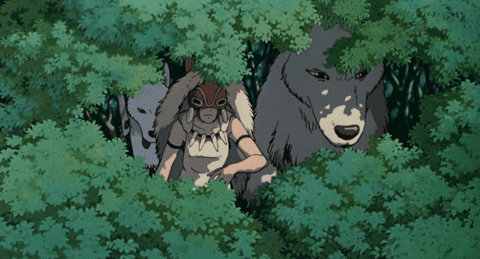
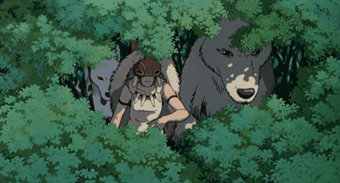
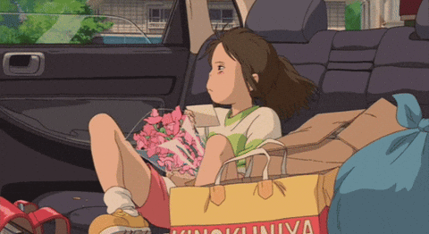
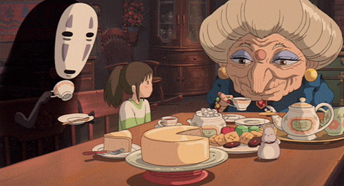

all about ghibli
studio ghibli is a japanese animation film studio founded on june 15, 1985 by directors miyazaki hayao and isao takahata, as well as producer toshio suzuki. it is well known for its high quality animation, vivid storytelling, vibrant artistry, and unique/cutesy characters. studio ghibli is also well regardered for its timeless classics which you may have heard of: my neighbor totoro, howl's moving castle, spirited away, kiki's delivery service - the list goes on!
in 1996, studio ghibli signed a deal allowing walt disney studios to distribute ghibli movies, with the cavaet that no additional film editing was to take place. the following year, princess mononoke (1997) was released and became a major success in theaters!
 

however, one of studio ghibli's most well-known films, as well as one of my personal favorites is spirited away (2001), which won a number of awards, such as the golden bear at the 2002 berlin international film festival and the 2003 academy award for best animated feature.
 why is it called studio ghibli?
ghibli is the italian word for hot sahara wind, as miyazaki intended for the studio to blow new wind through the anime industry. it really just shows the dedication and well-meaning of miyazaki and his fellow directors!
personal thoughts
i believe that what makes ghibli so special is that, unlike other animation studios, it doesn't care for the money, and focuses on using their art to explore and shine light on the human experience. even the villains, all have a unique story to tell. on a lighter note, i also just love the ambience of any ghibli film - it feels very dreamy and light-hearted, and the characters are always super cutesy and whimsical! life just seems simpler and more serene in a ghibli movie.